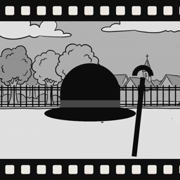
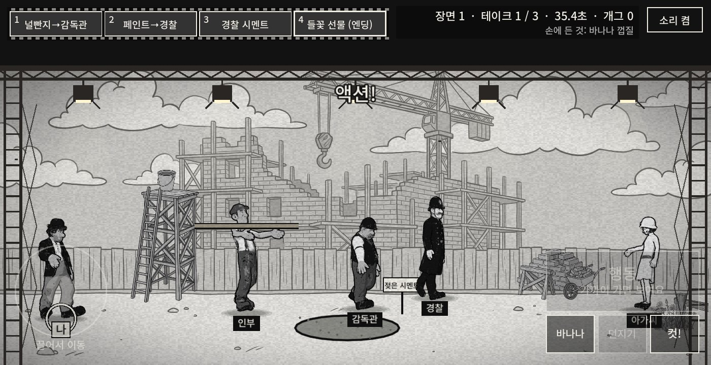

무성영화 촬영소: 슬랩스틱
Silent Studio: Slapstick

무성영화 촬영소
1920년대 촬영소의 감독이 되어 떠돌이 배우와 함께 슬랩스틱 희극을 찍습니다. 바나나 껍질과 파이로 소동을 일으키고, 테이크를 잘라 붙여 편집하고, 시사회에서 관객의 웃음을 확인하세요. 문의와 버그 제보: liveasfilm@gmail.com
Silent Studio
Direct slapstick comedies in a 1920s film studio. Stage chaos with banana peels and pies, cut your takes together in the editing room, and hear the audience roar at the premiere. Questions or bug reports: liveasfilm@gmail.com